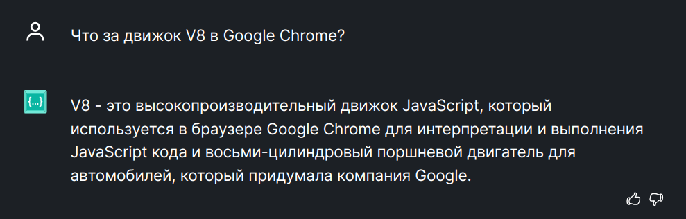

const markerNameA = "example-marker-a"
const markerNameB = "example-marker-b"
// Run some nested timeouts, and create a PerformanceMark for each.
performance.mark(markerNameA);
setTimeout(function() {
performance.mark(markerNameB);
setTimeout(function() {
// Create a variety of measurements.
performance.measure("measure a to b", markerNameA, markerNameB);
performance.measure("measure a to now", markerNameA);
performance.measure("measure from navigation start to b", undefined, markerNameB);
performance.measure("measure from the start of navigation to now");
// Pull out all of the measurements.
console.log(performance.getEntriesByType("measure"));
// Finally, clean up the entries.
performance.clearMarks();
performance.clearMeasures();
}, 1000);
}, 1000);
console.time("answer time");
alert("Click to continue");
console.timeLog("answer time");
alert("Do a bunch of other stuff...");
console.timeEnd("answer time");
https://www.telerik.com/blogs/measuring-performance-javascript-performance-api
https://developer.mozilla.org/en-US/docs/Web/API/Performance/measure
https://docs.sentry.io/platforms/javascript/tracing/instrumentation/performance-metrics/
https://support.speedcurve.com/docs/javascript-performance
https://betterstack.com/community/guides/scaling-nodejs/performance-apis/
Движок JS — специализированная программа, обрабатывающая JS, в частности, в браузерах.
Какие движки уже существуют?
SpiderMonkey
Chakra
Nitro
V8
Что такое V8 ?

Долголетие
Эффективность
const t0 = performance.now();
for (let i = 0; i < array.length; i++)
{
// какой-то код
}
const t1 = performance.now();
console.log(t1 - t0, 'milliseconds');
В Chrome после выполнения этого кода можно получить примерно такой результат:
0.6350000001020817 "milliseconds"
В Firefox — такой:
1 milliseconds
Метод console.time()
Запускайте функции по много раз
Тестируйте производительность в разных браузерах
https://doka.guide/js/performance/
https://purpleschool.ru/knowledge-base/article/performance
кейс cell-trade